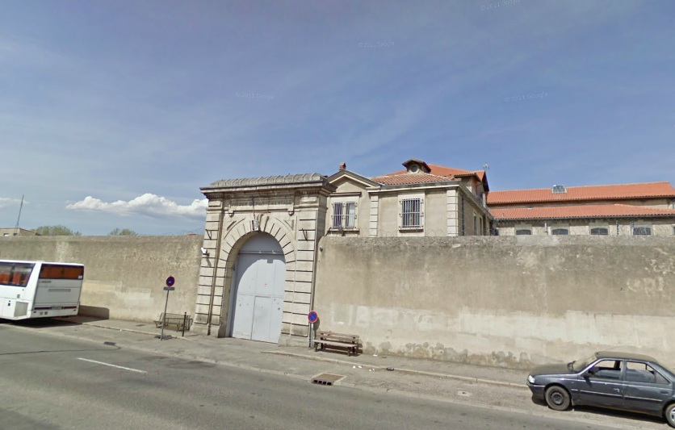
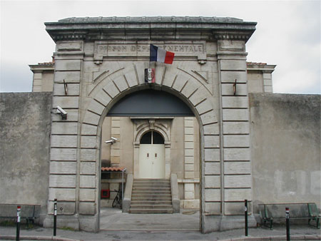
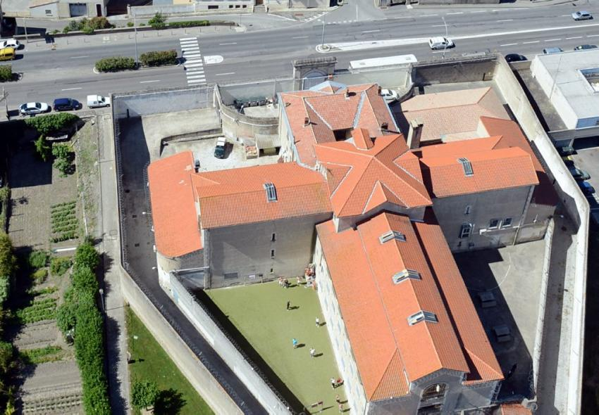
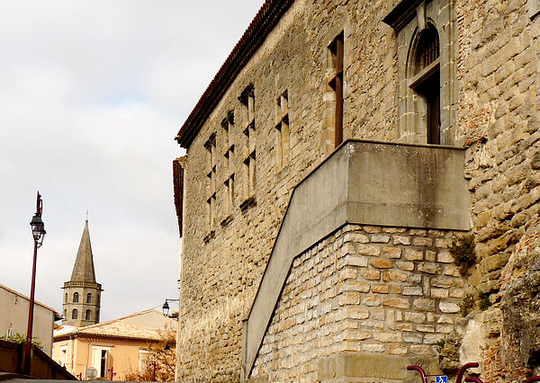

| Département | Images | Ville | Nom | Adresse | Période | Capacité | Histoire du lieu | Nombre d'exécutions |
| Aude (11) | Carcassonne | Maison d'arrêt, de justice et de correction | 14-16, boulevard de la Préfecture (actuel boulevard Jean Jaurès) | 1830-1898 | Conçue par l'architecte départemental Sargine Champagne pour remplacer les deux anciennes prisons, sises pour l'une dans la Cité, pour l'autre rue de Verdun, la prison de Carcassonne est ce qu'on nomme à l'époque une prison modèle. Jouxtant la caserne de gendarmerie, sur un terrain d'un demi-hectare délimité au Sud par le square et au Nord par la rue Fédou, ce bâtiment d'un étage et équipé d'environ 110 cellules sépare distinctement hommes, femmes et mineurs selon le système américain d'Auburn - isolement de nuit, travail et réfectoire en communauté le jour. Après neuf ans de ce régime, la direction adopte la méthode de Philadelphie, prônant l'enfermement isolé 24 heures sur 24, ce qui cause quelques problèmes à cause de la surpopulation (140 prisonniers pour 110 places). La prison sera améliorée de 1841 à 1846, mais à peine dix-sept ans après le chantier, alors qu'en 1861, le nouveau palais de justice a été inauguré à cinquante mètres au Nord de la maison d'arrêt (remplaçant l'ancien, dont on fait alors la Bibliothèque Municipale), l'architecte Desmaret prône l'éloignement des prisons du centre-ville, tant pour des raisons esthétiques que financières (le quartier devient de plus en plus intéressant immobilièrement et les acheteurs risquent d'être mécontents de devoir voisiner avec les détenus)... Néanmoins, il faudra attendre les dernières années du XIXe siècle pour que la prison soit fermée au profit d'une nouvelle maison d'arrêt sur l'autre berge. Les bâtiments resteront en l'état jusque vers 1928, avant d'être démolis pour permettre la construction d'une nouvelle grande et belle école. | Aucune exécution | ||
| Aude (11) |    |
Carcassonne | Maison d'arrêt, de justice et de correction | 3, avenue du Général-Leclerc | En service depuis 1898 | 31 places (1962) | Une exécution en 1924. | |
| Aude (11) |  |
Castelnaudary | Maison d'arrêt | Rampe du Présidial | 179?-1926 | Jouxtant le tribunal du Présidial. Désormais, le tribunal a laissé place à une école primaire, et la maison d'arrêt le musée du Lauragais. | Aucune exécution | |
| Aude (11) | Limoux | Maison d'arrêt | Rue du Palais | 1844-1926 | Située au sud du Palais de Justice. Les bâtiments existent toujours. | Aucune exécution | ||
| Aude (11) | Narbonne | Maison d'arrêt | Impasse Flatters/Place du Tribunal (Roger Salengro) | 1836-1926 | Desaffecté durant la Révolution, l'ancien couvent des Capucins, construit sous Henri IV (vers 1597), reste sans fonctions jusqu'à la Monarchie de Juillet. Petit à petit, il est démoli pour permettre la construction d'un pôle judiciaire (gendarmerie-tribunal-prison). La maison d'arrêt est la première à être desaffectée à son tour, après 90 ans d'emploi. Le palais de justice, sans doute plus tellement aux normes, est fermé à son tour en 2005 quand un nouveau tribunal voit le jour. Démoli, il a depuis cédé la place à la MJC. | Aucune exécution |
{kind=link}
{kind=link}
{kind=link}
{kind=link}